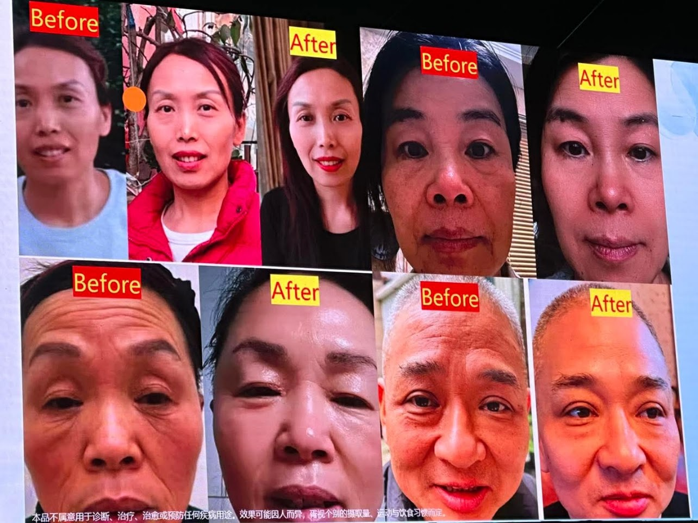

ARTISTRY · HEALTHY BEAUTY
先看自己，再选择美。
把 Skin Analysis、肤质、系列、成分与彩妆变成一场 personalised beauty journey。

把 Skin Analysis、肤质、系列、成分与彩妆变成一场 personalised beauty journey。


你的资料包含 Gut–Brain–Skin Axis、skin barrier 与 skin microbiome 的视觉内容。这里可以让访客点击理解关系，再进入产品信息。
可作为 ARTISTRY Skin Nutrition 的成分故事入口。
与 Nutrilite botanical story 连接。
用于展示 traceability 与 ingredient education。